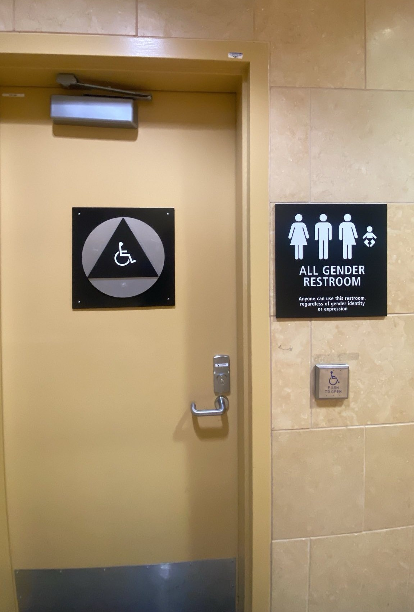

Ikkinchi qavat - TSA/Xavfsizlik va jo'nashlar. U ikkita bo'limga bo'lingan va bir bo'limdan ikkinchisiga o'tish uchun siz ham kerak
pastga tushing
ikkinchi qavatda tashqarida yuring
Aeroportga 2-terminal orqali kirishni tavsiya qilamiz.
Agar siz aeroportga qaragan bo'lsangiz:
O'tish uchun chapga o'ting: United, JetBlue, Delta
O'ng tomonga o'ting: Alyaska, Amerika
Pastga tushing va o'ng tomonga yuring (taxminan 10 daqiqa): terminal 1 (Frontier, Spirit, Janubi-g'arbiy)
Samolyot chiptasini onlayn sotib olish yaxshiroqdir. Faqat ba'zi aviakompaniyalar kassada chipta sotib olishga ruxsat beradi va odatda to'lov mavjud. Chipta kassalari naqd pulni qabul qilmaydi.
Aeroportdagi Wi-Fi eskalator yaqinidagi 2-terminalda kuchliroq. Parvoz chiptalarini bron qilishda yaxshiroq internet aloqasi uchun u erga boring.
San-Diego xalqaro aeroportining statik xaritasini ko'rish uchun bosing
San-Diego xalqaro aeroportining 2 statik xaritasini ko'rish uchun bosing
Ko'ngillilar
Ko'ngillilar aeroportga ertalab (8:00 dan 11:00 gacha) yoki kechqurun (17:00 dan 22:00 gacha) kelishlari mumkin. Ular butun aeroport bo'ylab yurishadi
Ko'ngillilar bepul oziq-ovqat va stakanlarga ega bo'lishadi, ularni aeroportning istalgan favvoralarida suv bilan to'ldirishingiz mumkin.
Ko'ngillilar bepul kiyim-kechak, gigiena vositalari (tish cho'tkalari, nam salfetkalar, hayz ko'rish vositalari, tagliklar), adyolga ega bo'lishlari mumkin.
Aylanadigan vagon yoki aravaga ega odamlarni qidiring, ular ko'k yoki yashil yelek kiygan bo'lishi mumkin
Ko'ngillilar quyidagi savollarga javob berishlari mumkin: samolyotni qayerdan topish, bortga chiqish talonini/chiptasini qanday olish, parvozingiz qachon
Aeroportda tunab qolasizmi? Iltimos, bizga xabar bering. Sizni tunash uchun joyimiz bo'lishi mumkin
O'zingizni yomon his qilyapsizmi yoki tibbiy yordamga muhtojmisiz? Ko'ngilliga ayting va ular sizga yordam berishga harakat qilishadi
Sizning parvozingiz bekor qilindi va sizga katolik xayriya tashkilotlari yoki yahudiy oilaviy xizmatlari yordam berdimi? Biz sizni CC yoki JFS bilan bog'lashimiz mumkin
Vanna xonalari
Hammomlar butun aeroportda joylashgan
Aeroportda hammom mavjud bo'lgan bitta koridor Ayollar hammomi logotipi Erkaklar hammomi logotipi

Bir kishilik hammom uchun logotip. Bu hammom harakatlanish muammosi bo'lgan odamlar, kichik bolalar yoki erkaklar va ayollar uchun odatiy hammomlardan noqulay bo'lgan odamlar uchun javob beradi.
Suv favvoralarini ko'pincha hammom yonida topish mumkin.
Ushbu fotosuratning chap tomonida suv favvorasi joylashgan. Ushbu fotosuratning o'ng tomonida bir kishilik hammom mavjud.
Ho'l salfetkalarni hojatxonaga yuvmang
Elektr rozetkalari
Aeroport bo'ylab savdo nuqtalari mavjud. Birinchi qavatda ko'proq savdo nuqtalari mavjud
Siz birinchi qavatdagi stullarda uxlashingiz mumkin
Aeroport do'konlari va restoranlari
Ko'pgina do'konlar va restoranlar 20:00 da yopiladi
1-terminaldagi Jack in the Box oxirgi yopiladigan restoran (20:00)
Aeroportda sigaret sotilmaydi
SIM-kartani 1-terminaldagi do'kondan qutidagi Jek yaqinidagi xarid qilishingiz mumkin
Pul
Aeroportda valyuta ayirboshlash yo'q
Aeroportda Western Union yo'q. Western Unionga borish uchun Old Town vokzaliga borish kerak bo'ladi.
"Ready Card" mashinalari deb ataladigan mashinalar mavjud. Ular sizning naqd pulingizni oldindan to'langan debet Mastercard kartasiga $6 to'lov evaziga almashtiradilar
Jami oltita tayyor stantsiya mavjud bo'lib, ular chiptalar kassalari yaqinida joylashgan. Oldindan to'langan debet Mastercardga ega bo'lganingizdan so'ng, siz samolyot chiptangizni chiptalar kassalarida yoki onlayn xarid qilishingiz mumkin.
Ready Station mashinasidan foydalanish bo'yicha ko'rsatmalar:
Stantsiyani toping va boshlash uchun ekranni bosing.
Ekranda muhim ma'lumot xabari paydo bo'ladi, davom etish uchun qabul qilish tugmasini bosing. Oldindan to'langan debet kartaga maksimal 1000 dollar yuklanishi mumkin.
Oldindan to'langan debet kartani xarid qilish va naqd pulni yuklash uchun "XARID" tugmasini bosing.
Mashinaga kerakli miqdordagi naqd pulni kiriting. Agar siz $100 kiritsangiz, karta balansi $94 ni tashkil qiladi.
Naqd pul kiritishni tugatgandan so'ng, ekrandagi "Bajarildi" tugmasini bosing.
Kartadagi miqdor to'g'ri ekanligini tasdiqlang.
Agar summa to'g'ri bo'lsa, "TAYOR - KARTA BERISH" tugmasini bosing.
Agar siz ko'proq pul qo'shmoqchi bo'lsangiz, "KO'PROQ PUL QO'SHISH" tugmasini bosing.
Tranzaksiya yakunlandi. Kartani oling.
Ikkala terminalda ham bankomatlar mavjud
Aviachipta kassalari naqd pulni qabul qilmaydi
Boshpana
Agar sizda aviachiptalar bo'lmasa va yashash uchun joy kerak bo'lsa, San-Diegodagi eng yaqin boshpana San-
Diego (Nil Gud) kunlik markazi
,
299 17-uy.
San-Diego (Neil Good) kunlik markazi dushanbadan jumagacha, soat 7:00 dan 15:00 gacha ochiq
Joy cheklangan - joyni taʼminlash uchun u erga ertalab soat 6 ga qadar yetib olishga harakat qiling.
San-Diego (Neil Good) kunduzgi markazida hojatxonalar, kir yuvish va uyali telefonlarni zaryadlash joylari mavjud.
Agar siz kechaga taxminan 120 dollar to'lashga qodir bo'lsangiz, EZ 8 Motelini ko'rib chiqishingiz mumkin. Qo'shimcha ma'lumot olish uchun
Old Town Station sahifasiga
qarang .
TSA/Xavfsizlik
AQShda parvoz qilmoqchi bo'lgan barcha shaxslar TSA jarayonlari va qoidalariga bo'ysunadilar.